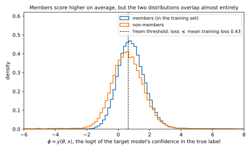
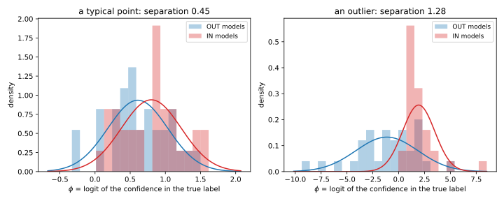
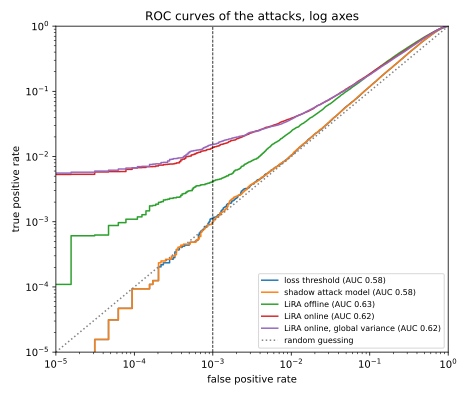
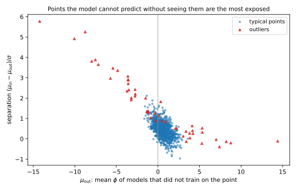

10 Membership inference
10.1 Why this matters
A hospital trains a model to predict a disease and publishes it. You hold one patient’s record. Was that record in the training set? If it was, you have learned that the patient was treated at that hospital for that disease, and the model never output a diagnosis. This is membership inference, the simplest question an attacker can ask about a trained model and the one asked most often. A membership inference attack is also the standard way to measure how much a model leaks: if an attacker cannot even tell whether a record was used, it can do little else with it. The reverse does not hold. A model that leaks membership may leak more, and the later chapters of this part show how.
An attack is scored by two rates. Its true positive rate (TPR) is the fraction of members it flags as members, and its false positive rate (FPR) is the fraction of non-members it wrongly flags. A useful attack flags many members while flagging few non-members. With these two numbers in hand, the chapter answers four questions, each building on the one before.
The first is why a model leaks membership at all. The answer is that it fits its training data better than other data, so its loss on a record it trained on is usually lower than on a fresh one. The simplest attack says “member” when the loss is low, and its advantage, the TPR minus the FPR, turns out to equal the generalization gap: the difference between the model’s average loss on fresh data and on its training data. The second question is how an attacker can learn what members look like when it cannot see the training data. It trains shadow models of its own, on data where it knows who is a member, and watches how they behave. The third is what the best attack is. It is a likelihood-ratio test run separately for each record: the likelihood ratio attack (LiRA) estimates, for each record, how the model’s output on that record is distributed when the record was trained on and when it was not, and asks which of the two the observed output fits better. The fourth is how an attack should be scored and who is at risk. Attacks should be compared by their TPR at a low FPR, because only there does a “member” verdict carry confidence, and the people an attack identifies at that end are almost all outliers.
10.1.1 The one idea: membership inference is a test about one record
Fix a target record \(z\). Train a model on a dataset that contains \(z\), and look at the model’s output on \(z\). Train it again on a dataset that does not, and look again. The two outputs will not repeat exactly if you retrain, because training is random: the rest of the data, the initialization and the order of the examples all change. So each case gives a distribution of outputs, the IN distribution and the OUT distribution of \(z\). The attacker sees one output and must say which distribution it came from.
That is a test between two fully specified hypotheses, and the Neyman–Pearson lemma says how to do it best. Compute the likelihood ratio, the density of the observed output under IN divided by its density under OUT, and say “member” when it is above a threshold. For any allowed FPR, no test flags more members. The reason is a budgeting argument. Each possible output costs its OUT probability in false positives if you call it “member”, and earns its IN probability in true positives. With a fixed false-positive budget, you earn the most by calling “member” on the outputs with the best ratio of earnings to cost first, and that ratio is the likelihood ratio.
The IN and OUT distributions differ from record to record. A typical record is predicted well whether or not it was in the training set, so its two distributions nearly coincide. An atypical record is predicted badly unless the model saw it, so its two distributions are far apart. Every result in this chapter follows from taking that seriously. The loss attack uses one threshold for every record, so it confuses “easy record” with “member”. Shadow models are how the attacker estimates the two distributions, record by record. LiRA fits them per record, and once you account for the record’s identity it is the Neyman–Pearson test for the whole game. And the low-FPR end of the curve is made of the records whose two distributions are far apart, which are the outliers.
Table 10.1 lists the results and where each is used.
| Result | Where it is used |
|---|---|
| Loss attack: advantage \(=\) generalization gap \(/B\) | Why overfit models leak; a lower bound on leakage from train and test error alone |
| Shadow models | Every practical attack that needs to know what members look like |
| Shadow attack model estimates the membership posterior | Why an attack model trained on shadows is optimal among attacks that ignore the record’s identity |
| LiRA (online and offline) as a per-example likelihood-ratio test | The strongest black-box attack; the attack used to audit trained models |
| One threshold on the per-example likelihood ratio is optimal | Why calibrating per example beats any global threshold |
| TPR at a low FPR on log-scaled receiver operating characteristic (ROC) curves | Reporting any privacy attack honestly |
| Per-example separation and self-influence | Predicting which records are exposed; why outliers are |
10.1.2 The running example
Every number in this chapter comes from one experiment, small enough to run in seconds and rich enough to show every effect. It has a pool of 1,000 labelled points in \(\mathbb R^{100}\), of two kinds, built so that some points are easy to predict and a few are not.
The 950 typical points have features \(x \sim \mathcal N(0, I/100)\): each of the 100 coordinates is normal with variance \(1/100\), so the squared length \(\|x\|^2\) is a sum of 100 terms that average \(1/100\) each, and \(\|x\| \approx 1\). Each gets a label \(y = \pm1\) that follows its first coordinate with some noise: \(\Pr[y = 1 \mid x] = \sigma(30x_1)\), where \(\sigma(t) = 1/(1 + e^{-t})\) is the logistic function, which turns any real number into a probability. The 50 outliers have the same kind of \(x\) scaled by 5, so they are five times longer, and a label drawn by a fair coin. Nothing else in the data predicts an outlier’s label, so a model can only get it right by fitting that point itself.
Each model is \(L_2\)-regularized logistic regression: it chooses the weight vector \(\theta\) that minimizes the average logistic loss on its training points plus a penalty \(\frac\lambda2\|\theta\|^2\) that keeps the weights small, with \(\lambda = 10^{-3}\). Each model trains on a random half of the pool (\(n = 500\)). Models come in complementary pairs: one trains on a random half, the next on the other half, so every point is a member of exactly half the models. The attacker targets 128 such models. It also trains 64 shadow models of its own in the same way. The attacker knows the pool and the training recipe but not which half any target model used. Every target model can be asked about all 1,000 pool points, and each (target model, point) pair is one game: 500 of the points are members of that model and 500 are not. Over 128 target models, that is \(128 \times 500 = 64{,}000\) member pairs and 64,000 non-member pairs.
This is the setup of Carlini et al. (2022), scaled down from an image classifier to a linear model. Section 10.8 describes the full-size pipeline.
What this chapter assumes. The membership game, the advantage \(\mathrm{Adv} = \mathrm{TPR} - \mathrm{FPR}\) and its ceiling, and the difference between average-case and worst-case games are in Threat models and privacy games. The Neyman–Pearson lemma, trade-off curves, ROC curves, the Bayesian view and confidence intervals for rates are in Hypothesis testing. The generalization gap and the self-influence of a training example are in Algorithmic stability and generalization. Each is restated below where it is used.
Conventions. As in Threat models and privacy games, \(b = 1\) is the world in which the target is a member (the alternative hypothesis) and \(b = 0\) the world in which it is not (the null). A model is its weight vector \(\theta\). A record is \(z = (x, y)\), a feature vector and its label. An attack outputs a score and says “member” when the score exceeds a threshold. Its TPR is the fraction of members it flags and its FPR the fraction of non-members it flags. Logarithms are natural.
10.2 Toolkit: three facts every derivation uses
10.2.1 Fact 1 — The membership game and its advantage
Membership inference is scored as a game, so that “the attack works” has a precise meaning. The challenger draws a training set and flips a fair coin to get a hidden bit \(b\). The coin decides the target \(z\): if \(b = 1\), \(z\) is a member of the training set; if \(b = 0\), it is a fresh record from the same population. The challenger trains \(\theta\) and gives the adversary \(z\) and query access to \(\theta\). The adversary guesses \(b'\), 1 for “member” and 0 for “not a member”.
The coin is fair so that neither answer is right more often by default: an adversary that ignores the model and always says “member”, or flips a coin of its own, wins exactly half the games. Any win rate above \(\frac12\) must come from what the model reveals. \(\Pr[b' = b]\) is the probability that the guess is correct, whichever value the bit has; it is not the probability that \(b\) is 1.
To compute it, split the games by the value of the bit. Half the games have \(b = 1\), and the adversary wins those when it says “member”, which it does with probability TPR. The other half have \(b = 0\), and it wins those when it says “not a member”, with probability \(1 - \mathrm{FPR}\). Adding the two halves gives \(\frac12\mathrm{TPR} + \frac12(1 - \mathrm{FPR})\), which rearranges to
\[\Pr[b' = b] = \tfrac12 + \tfrac12\mathrm{Adv}, \qquad \mathrm{Adv} = \mathrm{TPR} - \mathrm{FPR}. \tag{10.1}\]
The advantage is how much more often the attack says “member” to members than to non-members. An attack that ignores the model says “member” equally often in both worlds and scores 0; a perfect attack scores 1. This is Fact 1 of Threat models and privacy games.
In the running example, “pick a target model and a pool point” is this game with the pool as the population: the point is a member of that model’s training set with probability \(\frac12\), because each model trains on half the pool. The loss attack, the shadow attack and the comparison of attacks by advantage all use this fact.
10.2.2 Fact 2 — The best test of two Gaussians, at any FPR
Most of the chapter reduces to one test: an observation \(X\) is a standard normal variable in one world and the same bell curve shifted right by \(s\) in the other. Which world produced it? Write \(H_0: X \sim \mathcal N(0, 1)\) and \(H_1: X \sim \mathcal N(s, 1)\), with \(s > 0\). The number \(s\) is the separation: the distance between the two means in units of the standard deviation. A large \(s\) means the two bell curves barely overlap.
By the Neyman–Pearson lemma, the best test thresholds the likelihood ratio. Here the log of the ratio of the two normal densities is \[\ln\frac{e^{-(X - s)^2/2}}{e^{-X^2/2}} = \frac{X^2 - (X - s)^2}{2} = sX - \frac{s^2}2, \tag{10.2}\] which grows with \(X\). So “the likelihood ratio is large” is the same as “\(X\) is large”, and the best test says “\(H_1\)” when \(X\) exceeds some cut-off.
The cut-off is set by the FPR you allow. Write \(\Phi\) for the standard normal cumulative distribution function: \(\Phi(t)\) is the probability that a standard normal variable is below \(t\), and \(\Phi^{-1}\) is its inverse. To flag a fraction \(\alpha\) of \(H_0\) draws, the cut-off must be the point that a standard normal exceeds with probability \(\alpha\), which is \(\Phi^{-1}(1 - \alpha)\). Under \(H_1\), \(X - s\) is standard normal, so \(X\) passes the cut-off with probability \(1 - \Phi\big(\Phi^{-1}(1 - \alpha) - s\big)\). That is the TPR: \[\mathrm{TPR}(\alpha) = 1 - \Phi\big(\Phi^{-1}(1 - \alpha) - s\big). \tag{10.3}\] This is the Gaussian trade-off curve of Hypothesis testing, written as TPR against FPR: the most members any test can catch, at each FPR.
To get a feel for it, take \(\alpha = 10^{-3}\), so the cut-off is \(\Phi^{-1}(1 - \alpha) = 3.0902\): a standard normal exceeds 3.0902 one time in a thousand. With a separation of 0.5, a member’s \(X\) must still clear \(3.0902 - 0.5 = 2.59\) standard deviations above its own mean, so \(\mathrm{TPR} = 1 - \Phi(2.59) = 0.0048\), barely five times the chance rate of 0.001. With a separation of 4, the cut-off sits \(3.0902 - 4 = -0.91\) standard deviations from the member mean, below it, so most members pass: \(1 - \Phi(-0.91) = 0.8185\). LiRA’s Gaussian fits, the two-type example and the exposure of outliers all use this formula.
10.2.3 Fact 3 — For logistic regression, the logit of the confidence is the margin
An attack has to pick some number from the model’s output to look at. Three natural choices are the confidence \(p_y\), the probability the model gives to the true label; the loss \(\ell = -\ln p_y\); and the logit of the confidence, \(\phi = \ln\frac{p_y}{1 - p_y}\), the log of the odds the model gives to the true label. For logistic regression the last one is especially simple. The model gives the true label \(y\) the probability \(p_y = \sigma(y\langle \theta, x\rangle)\), and the logit undoes the logistic function, \(\ln\frac{\sigma(t)}{1 - \sigma(t)} = \ln\frac{1/(1 + e^{-t})}{e^{-t}/(1 + e^{-t})} = t\). So \(\phi\) is the margin \(y\langle \theta, x\rangle\), how far the point lies on the correct side of the decision boundary, and the loss is a function of it: \[\phi = \ln\frac{p_y}{1 - p_y} = y\langle \theta, x\rangle, \qquad \ell = -\ln p_y = \ln\big(1 + e^{-\phi}\big). \tag{10.4}\] The second formula is \(-\ln\sigma(\phi)\) written out, since \(1/\sigma(\phi) = 1 + e^{-\phi}\).
The three numbers behave differently at the confident end. A model that gives the true label probability 0.9 has \(\phi = \ln(0.9/0.1) = \ln 9 = 2.197\) and loss \(\ln(1/0.9) = 0.105\). Probability 0.99 gives \(\phi = 4.595\); 0.999 gives \(6.907\). The probability crowds against 1, while \(\phi\) keeps spreading the values out.
Yet as decision rules they are interchangeable. The confidence and \(\phi\) rise together, and the loss falls as they rise, so each is a monotone function of the others. A threshold on one is a threshold on the others, and all three give the same ROC curve. They differ only when a statistic is combined across records, for example averaged or fitted with a Gaussian, which is where LiRA’s choice of \(\phi\) matters.
10.3 The loss attack and the generalization gap
10.3.1 Context
A model is fitted to its training data, so it usually has a lower loss on a training point than on a fresh one. Yeom et al. (2018) turned this into an attack: say “member” when the loss is low. The attack needs no shadow models and no knowledge of the population beyond the loss threshold. They also showed that its advantage is exactly the generalization gap: overfitting and membership leakage are, for this attack, the same number.
10.3.2 Statement
The cleanest version of the attack turns the loss directly into a probability of saying “member”: the lower the loss, the more likely the verdict “member”. For that to be a probability, the loss must have a known range, so let it take values in \([0, B]\). The bounded-loss attack says “member” with probability \(1 - \ell(\theta; z)/B\): always at loss 0, never at loss \(B\), and in proportion in between. In the membership game of Fact 1, its advantage is the expected loss on non-members minus the expected loss on members, divided by \(B\). That difference is the generalization gap: the model’s expected loss on fresh data, its population risk \(\mathcal L_{\mathcal D}(\theta_D)\), minus its average loss on its own training set \(D\), its empirical risk \(\mathcal L(\theta_D; D)\). So \[\mathrm{Adv} = \frac{\mathbb E[\ell(\theta; z) \mid b = 0] - \mathbb E[\ell(\theta; z) \mid b = 1]}{B} = \frac{\mathbb E_D\big[\mathcal L_{\mathcal D}(\theta_D) - \mathcal L(\theta_D; D)\big]}{B}, \tag{10.5}\] the expected generalization gap divided by \(B\). For the 0-1 loss (\(B = 1\)), which is 0 on a correct prediction and 1 on a wrong one, the attack is deterministic, “member if and only if the model classifies \(z\) correctly”, and its advantage is the test error minus the training error.
10.3.3 Derivation
The plan is to compute the attack’s TPR and FPR as average losses, subtract them as Fact 1 says, and then recognize the two averages as test loss and training loss.
- TPR. Given \(b = 1\), the attack says “member” with probability \(1 - \ell/B\) for whatever loss the target has. Averaging over targets and training runs, \(\mathrm{TPR} = \mathbb E[1 - \ell/B \mid b = 1] = 1 - \mathbb E[\ell \mid b = 1]/B\).
- FPR. The same calculation with \(b = 0\) gives \(\mathrm{FPR} = 1 - \mathbb E[\ell \mid b = 0]/B\).
- Subtract. By Fact 1 the advantage is \(\mathrm{TPR} - \mathrm{FPR}\). The 1s cancel and \(\mathrm{Adv} = (\mathbb E[\ell \mid b = 0] - \mathbb E[\ell \mid b = 1])/B\).
- Identify the two averages. When \(b = 1\), \(z\) is a uniformly chosen training point, so its expected loss is the expected training loss, \(\mathbb E[\ell \mid b = 1] = \mathbb E_D[\mathcal L(\theta_D; D)]\). When \(b = 0\), \(z\) is a fresh draw independent of \(D\), so its expected loss is the expected test loss, \(\mathbb E[\ell \mid b = 0] = \mathbb E_D[\mathcal L_{\mathcal D}(\theta_D)]\). Their difference is the expected gap of Algorithmic stability and generalization.
- The 0-1 loss. With \(\ell \in \{0, 1\}\) and \(B = 1\), “member with probability \(1 - \ell\)” says “member” with probability 1 when \(\ell = 0\) and 0 when \(\ell = 1\), that is, exactly when \(z\) is classified correctly. The members it flags are the training points the model gets right, so \(\mathrm{TPR} = 1 - \text{train error}\); the non-members it flags are the fresh points it gets right, so \(\mathrm{FPR} = 1 - \text{test error}\); and \(\mathrm{Adv} = \text{test error} - \text{train error}\).
10.3.4 Interpretation
The first lesson is that overfitting implies leakage. Any model with a generalization gap leaks membership through its loss, by at least the gap divided by the loss range. You can read this off from training and test error alone, without running any attack.
The gap also has a finer structure. The stability chapter shows that the expected gap equals the average self-influence of the training examples: how much each example’s own loss rises when it is taken out of training and replaced by a fresh record. The reason is that a training point’s loss and a fresh point’s loss differ exactly by whether the model saw that point. So the loss attack’s advantage is the average, over records, of how much each record is memorized. An average hides who is memorized, and Section 10.7 measures it record by record.
The converse fails: a small gap does not mean a private model. The loss attack is one attack. It is the best attack that sees only the loss and ignores which record it is looking at, but a record-aware attack can beat it by a wide margin, as the rest of this chapter shows. Yeom et al. also construct models that leak membership with no generalization gap at all.
Finally, the randomized rule is convenient for the proof, but an attacker would rather use a plain threshold. Yeom et al. also propose a deterministic version: say “member” when the loss is below the expected training loss \(\tau\). That needs only \(\tau\), which an attacker can estimate from shadow models or a reported training loss.
10.3.5 Example: the running example
Over the 128 target models, the training error is 0.1495 and the test error is 0.2663. “Member if correctly classified” flags the members it gets right, so \(\mathrm{TPR} = 1 - 0.1495 = 0.8505\), and the non-members it gets right, so \(\mathrm{FPR} = 1 - 0.2663 = 0.7337\). Its advantage is \(0.8505 - 0.7337 = 0.1168\), exactly the gap \(0.2663 - 0.1495\).
The logistic loss is unbounded, so the bounded-loss attack needs it clipped: replace any loss above \(B = 2\) by 2. The mean clipped loss is 0.4158 on members and 0.5433 on non-members. Equation 10.5 predicts an advantage of \((0.5433 - 0.4158)/2 = 0.0638\). Drawing the attack’s coins gives 0.0639. With Yeom’s threshold, the mean training loss \(\tau = 0.4159\), the deterministic attack has \(\mathrm{TPR} = 0.5936\), \(\mathrm{FPR} = 0.4834\) and advantage 0.1102.
By Fact 1, an advantage between 0.0638 and 0.1168 means winning between \(\frac12 + \frac12(0.0638) = 0.532\) and \(\frac12 + \frac12(0.1168) = 0.558\) of games: the three attacks win between 53% and 56% of games. None identifies anyone with confidence: an FPR near one half means that half of the non-members are flagged too. Figure 10.1 shows why. The two distributions of \(\phi\) (equivalently, of the loss, by Fact 3) are shifted but almost entirely overlap.

10.3.6 Check yourself
- A model has training accuracy 99% and test accuracy 70%. What advantage does “member if correctly classified” reach? (The test error minus the training error, \(0.30 - 0.01 = 0.29\). It wins the membership game with probability \(\frac12 + \frac12 \times 0.29 = 0.645\).)
- Why does the bounded-loss attack need a randomized decision rather than a threshold? (Randomizing with probability \(1 - \ell/B\) makes the probability of saying “member” linear in the loss, so its expectation is the expected loss. A threshold gives an advantage that depends on the whole distribution of the loss, not only its mean.)
10.4 Shadow models
10.4.1 Context
An attacker who wants a better rule than “low loss means member” has to know what members’ outputs look like, and it has no labelled examples: it does not know who is in the target’s training set. Shokri et al. (2017) solved this with shadow models. The attacker trains models of its own that imitate the target: same architecture, same training recipe, data from the same distribution. For its own models it knows who was a member. It collects the shadow models’ outputs on members and non-members, labels them “in” and “out”, and trains an attack model, a classifier from outputs to membership. Shokri et al. train one attack model per class, with the prediction vector as input.
10.4.2 Statement
The claim is that, with enough shadow data, the attack model learns the best rule available from the output alone. Suppose each shadow model is trained exactly as the target is. Let \(o\) be the output the attacker sees (here \(o = (y, \phi)\), the class and the logit of the confidence). Train the attack model \(h(o) \in (0, 1)\), a predicted probability of “in”, by minimizing the cross-entropy, the usual classification loss \(-\ln h\) on “in” pairs and \(-\ln(1 - h)\) on “out” pairs, over the shadow pairs \((o, m)\), with \(m = 1\) for “in”.
As the number of shadow pairs grows, \(h\) tends to the posterior probability of membership, the probability that the record is a member given that the output is \(o\). With a fair prior, the posterior odds equal the likelihood ratio, so the posterior is an increasing function of it: \[h(o) \to \Pr[b = 1 \mid o], \qquad \frac{\Pr[b = 1 \mid o]}{\Pr[b = 0 \mid o]} = \frac{q(o)}{p(o)}, \tag{10.6}\] where \(q\) and \(p\) are the densities of \(o\) for members and for non-members, pooled over all records. So thresholding the attack model is the Neyman–Pearson test for the observation \(o\), and no attack that sees only \(o\) has a higher TPR at any FPR.
10.4.3 Derivation
The argument has four links: the shadow data look like the real game, cross-entropy training recovers the posterior, the posterior is a monotone function of the likelihood ratio, and thresholding the likelihood ratio is optimal.
- The shadow pairs have the right distribution. A shadow model is trained like the target, on data from the same population, and each record is in or out with probability \(\frac12\). So a shadow pair \((o, m)\) has the same joint distribution as a pair (target output, membership bit) in the game. Learning from shadow pairs is learning about the real game.
- Cross-entropy is minimized by the true posterior. Fix one output \(o\) and let \(\rho = \Pr[m = 1 \mid o]\) be the true fraction of “in” among pairs with that output. If the attack model predicts \(h\) there, its expected loss is \(-\rho\ln h - (1 - \rho)\ln(1 - h)\). Its derivative in \(h\) is \(-\rho/h + (1 - \rho)/(1 - h)\), which is zero at \(h = \rho\), and the function is convex, so that zero is the minimum. Since this holds separately at every \(o\), the minimizer over all functions of \(o\) is \(h(o) = \rho(o)\). With enough shadow data and a flexible enough attack model, training finds it.
- Bayes’ rule. Posterior odds equal prior odds times the likelihood ratio (Hypothesis testing): \(\Pr[b = 1 \mid o]/\Pr[b = 0 \mid o] = \frac{\Pr[b = 1]\,q(o)}{\Pr[b = 0]\,p(o)}\), because the joint probability of a world and an output is the prior of the world times the density of the output in that world. With prior odds 1, \(\Pr[b = 1 \mid o]/\Pr[b = 0 \mid o] = q(o)/p(o)\). The posterior \(h\) and the odds \(h/(1 - h)\) rise together, since \(h \mapsto h/(1 - h)\) is increasing.
- Neyman–Pearson. So a threshold on \(h(o)\) is a threshold on \(q(o)/p(o)\). By the Neyman–Pearson lemma, a likelihood-ratio threshold has the highest TPR at its FPR among all tests that see \(o\).
10.4.4 Interpretation
The attack model is optimal for the wrong question. The densities \(q\) and \(p\) in step 4 are pooled over records: the attack model sees \((y, \phi)\), not which record produced it. So it is the best attack among those that treat all records alike. If \(q(o)/p(o)\) is increasing in \(\phi\) within each class, which is what you expect when members tend to have higher \(\phi\), the attack is a threshold on \(\phi\) per class, which is the loss attack with a class-dependent threshold. It cannot know that \(\phi = 2\) is a high value for one record and a low value for another.
What shadow models really buy, then, is calibration. They let the attacker choose a threshold that gives a target FPR on the real model, without any member of the real training set: the attacker picks the threshold at which the desired fraction of its own shadow non-members pass, and trusts that the real non-members behave the same way. That is the job they keep in LiRA.
The imitation can also be crude. Salem et al. (2019) found that one shadow model is often enough, and that shadow data from a different distribution still works, because what the attack model learns (lower loss means member) transfers across tasks.
10.4.5 Example: the attack model on the running example
For each class, the attack model is a logistic regression of “in” on \((1, \phi)\), trained on the roughly 32,000 shadow pairs of that class (64 shadow models times the pool points with that label). Both slopes are positive (0.238 for \(y = -1\), 0.158 for \(y = +1\)), so within each class the predicted probability of “in” rises with \(\phi\), and a threshold on it is a threshold on \(\phi\). It is a per-class threshold on the loss. Its performance across all thresholds is summarized by the area under the curve (AUC), the area under its ROC curve, which equals the probability that a random member gets a higher score than a random non-member. Its AUC is 0.577, the same as the loss attack’s, and so is its TPR at every FPR to within sampling noise (Table 10.4).
Calibration works. Setting the attack model’s threshold on the shadow models so that their FPR is 1% gives, on the 128 target models it never saw, an FPR of 0.0095 and a TPR of 0.0098. The attacker hits the FPR it aimed for. At that FPR the TPR is no better than chance, since 0.0098 is about the 0.0095 fraction of non-members flagged, because a global threshold on \(\phi\) has nothing to work with at the low end.
10.4.6 Check yourself
- The attacker’s shadow data come from a different hospital than the target’s. Which step of the derivation fails, and is the attack useless? (Step 1: the shadow pairs no longer have the target’s joint distribution, so the attack model estimates the wrong posterior. It is not useless. Calibration is off, but “lower loss means member” usually still holds.)
- Why does feeding the attack model a richer input, the whole prediction vector instead of \(\phi\), not help in the running example? (For a binary linear model the prediction vector is \((\sigma(\langle \theta, x\rangle), 1 - \sigma(\langle \theta, x\rangle))\), and with the label it determines exactly \(\phi\) and \(y\), and \(\phi\) and \(y\) determine it back. Each view can be computed from the other, so by Fact 2 of Threat models and privacy games, which says that processing a view cannot help, they give the same best attack.)
10.5 LiRA: a likelihood-ratio test per example
10.5.1 Context
The pooled attacks of the last two sections compare a record’s output with everyone else’s. The right comparison is with the same record’s output under models that did and did not train on it. Carlini et al. (2022) built the likelihood ratio attack (LiRA) on that idea. For a target record \(z\), the attacker uses shadow models to estimate two distributions of \(\phi_z\), the logit of the confidence on \(z\): the IN distribution \(\tilde Q_z\) (models trained with \(z\)) and the OUT distribution \(\tilde P_z\) (models trained without \(z\)). It then computes the likelihood ratio of the observed \(\phi_z\) and thresholds it.
10.5.2 Statement
The attacker needs densities to form a likelihood ratio, and it only has a few dozen shadow values of \(\phi_z\) per record. So it summarizes each set by a bell curve: it fits a Gaussian to each distribution, \(\tilde Q_z = \mathcal N(\mu_{\mathrm{in}, z}, \sigma_{\mathrm{in}, z}^2)\) and \(\tilde P_z = \mathcal N(\mu_{\mathrm{out}, z}, \sigma_{\mathrm{out}, z}^2)\), from the shadow models that did and did not train on \(z\). Here \(\mu\) and \(\sigma\) are the mean and standard deviation of \(\phi_z\) over those models.
Online LiRA asks how much more likely the target model’s \(\phi_z\) is under the IN fit than under the OUT fit. Its score is the natural log of that ratio, where \(\mathcal N(\phi; \mu, \sigma^2)\) denotes the normal density at \(\phi\): \[\ln\Lambda_z(\phi_z) = \ln\mathcal N\big(\phi_z;\, \mu_{\mathrm{in}, z}, \sigma_{\mathrm{in}, z}^2\big) - \ln\mathcal N\big(\phi_z;\, \mu_{\mathrm{out}, z}, \sigma_{\mathrm{out}, z}^2\big) \tag{10.7}\] It says “member” when \(\ln\Lambda_z\) exceeds a threshold \(\tau\) that is the same for every record.
Offline LiRA uses only OUT models, which can be trained before the target record is known. It cannot compute an IN density, so it asks only how far above its usual OUT value the observed \(\phi_z\) lies, measured in OUT standard deviations: \[\frac{\phi_z - \mu_{\mathrm{out}, z}}{\sigma_{\mathrm{out}, z}}, \tag{10.8}\] again with one threshold for all records. When the Gaussian fits are exact, online LiRA is the Neyman–Pearson test for the membership game: no attack that sees \(z\) and \(\phi_z\) has a higher TPR at any FPR.
10.5.3 Derivation
Why one threshold on the per-example ratio is optimal. The adversary does not see \(\phi_z\) alone; it also knows which record it is testing. So the observation is the pair (record, output), and the Neyman–Pearson lemma should be applied to the pair. The point of the steps below is that the record part of the pair carries no evidence and drops out of the ratio, leaving each record’s own ratio.
- The view is a pair. In the membership game the adversary sees the target record \(z\) and the output \(\phi_z\). The density of the pair is the probability of drawing that record times the density of the output given the record. Write it as \(g(z)\,q_z(\phi)\) when \(b = 1\) and \(g(z)\,p_z(\phi)\) when \(b = 0\), where \(q_z\) and \(p_z\) are the IN and OUT densities of \(\phi_z\).
- The record’s own distribution is the same in both worlds. The challenger picks \(z\) from the same pool whether or not it ends up in the training set, so \(g\) is the same factor in both. (In the running example every point is in the pool and is a member with probability \(\frac12\).)
- The likelihood ratio of the pair is \(\frac{g(z)\,q_z(\phi)}{g(z)\,p_z(\phi)} = \frac{q_z(\phi)}{p_z(\phi)} = \Lambda_z(\phi)\). The factor \(g(z)\) cancels.
- Neyman–Pearson. The best test of the pair thresholds its likelihood ratio, \(\Lambda_z(\phi)\), at a single value. Different records are compared through their ratios, never through their raw \(\phi\).
This is the mixture argument of Fact 3 in Threat models and privacy games. An attacker that does not know which record it is testing sees an average over records of their IN and OUT distributions, and averaging blurs the differences, as when a large shift for a hard record is diluted among the small shifts of easy ones. An attacker that knows the record can undo that mixing: its best advantage rises from the total variation distance of the pooled distributions (the best advantage of any test between two distributions) to the average of the per-record ones.
Why Gaussian fits on \(\phi\). The fits are only as good as the bell-curve shape they assume, so it matters that \(\phi\), rather than the loss or the confidence, is close to Gaussian.
- \(\phi\) is linear in the weights. By Fact 3, \(\phi_z = y\langle \theta, x\rangle\), a fixed linear function of \(\theta\) for a fixed record. The regularized logistic-regression estimate \(\theta\) solves the equation “average gradient over the training points plus \(\lambda\theta\) equals zero”. Because that is an average of many independent terms, the central limit theorem makes \(\theta\) approximately Gaussian over the randomness of the training set (statisticians call such an estimate an M-estimator, and Section G.5 in the appendices proves this), and any fixed linear function of a Gaussian vector is Gaussian too. For a deep network the same scaling turns the confidence \(p_y\), which piles up against 1, into a quantity whose distribution over retrainings Carlini et al. found close to Gaussian.
- Estimate the parameters from shadows. In the running example every point is in exactly 32 of the 64 shadow models, because the shadows come in complementary pairs. The sample means and standard deviations over the 32 IN and the 32 OUT values give \(\mu_{\mathrm{in}, z}, \sigma_{\mathrm{in}, z}, \mu_{\mathrm{out}, z}, \sigma_{\mathrm{out}, z}\).
Offline as a one-sided test. Offline LiRA is a weaker test, and the last two steps say what it tests and when it loses nothing.
- Without IN models, the attacker cannot write down \(q_z\). It can still test “\(\phi_z\) is from \(\tilde P_z\)” against “\(\phi_z\) is larger than that”, because training on \(z\) raises \(\phi_z\): the model moves to fit \(z\), which increases its margin on \(z\). The standardized score Equation 10.8 is the natural statistic, and \(1 - \Phi\) of it is a one-sided p-value: the probability that a non-member’s output would lie at least this far above its OUT mean.
- When it loses nothing. Suppose the two fits have the same width, \(\sigma_{\mathrm{in}, z} = \sigma_{\mathrm{out}, z} = \sigma_z\). Measure everything in units of \(\sigma_z\) from the OUT mean: the offline score is \(t_z = (\phi_z - \mu_{\mathrm{out}, z})/\sigma_z\), and the IN mean sits at \(s_z = (\mu_{\mathrm{in}, z} - \mu_{\mathrm{out}, z})/\sigma_z\). Then \(t_z\) is standard normal under OUT and normal with mean \(s_z\) under IN, which is exactly the setting of Fact 2, and Equation 10.7 becomes \(\ln\Lambda_z = s_zt_z - s_z^2/2\). For one record, \(s_z\) is a fixed positive number, so both scores rank outputs the same way. Across records, they differ: online LiRA multiplies \(t_z\) by \(s_z\), so it turns a given \(t_z\) into strong evidence when \(s_z\) is large and weak evidence when \(s_z\) is small; offline LiRA treats every \(t_z\) the same.
10.5.4 Example: two kinds of record, in closed form
A population with two kinds of record shows how much the per-record comparison matters, with numbers you can check by hand. Take unit variances everywhere (Table 10.2). A typical record is predicted confidently whether or not the model trained on it, so its OUT and IN means are both high and close together. An atypical record has a negative \(\phi\) (it is misclassified) unless the model trained on it.
| Kind | Share | OUT: \(\phi \sim\) | IN: \(\phi \sim\) | Separation \(s\) | Best TPR at FPR \(10^{-3}\), this kind alone |
|---|---|---|---|---|---|
| Typical | 95% | \(\mathcal N(3, 1)\) | \(\mathcal N(3.5, 1)\) | 0.5 | 0.0048 |
| Atypical | 5% | \(\mathcal N(-2, 1)\) | \(\mathcal N(2, 1)\) | 4 | 0.8185 |
The separations are the gaps between the means, \(3.5 - 3 = 0.5\) and \(2 - (-2) = 4\), and the last column is the Fact 2 calculation done above for exactly these two separations. Now run three attacks, each set to a pooled FPR of \(10^{-3}\): over all non-members together, one in a thousand is flagged.
One threshold on \(\phi\) is the loss attack. The OUT values of typical records are high, and they make up 95% of non-members, so the threshold must sit high to let through only 0.1% of non-members: at \(\phi = 6.075\), typical non-members pass with probability \(1 - \Phi(6.075 - 3) = 1 - \Phi(3.075)\), about 0.00105, and times their share of 0.95 that is the whole budget of \(10^{-3}\). Atypical non-members, centred at \(-2\), essentially never pass. An atypical member scores around 2 and almost never passes. Only typical members, whose IN mean is 3.5, occasionally do, and the pooled TPR is 0.0048.
One threshold on the z-score is offline LiRA. Each record is standardized against its own OUT distribution, so every record gets FPR \(10^{-3}\), at \(t_z \ge 3.0902\). Each kind then gets its own best TPR from the table, and the pooled TPR is their weighted average, \(0.95 \times 0.0048 + 0.05 \times 0.8185 = 0.0455\).
One threshold on \(\ln\Lambda\) is online LiRA. The threshold is \(\ln\Lambda \ge 1.497\). With equal variances \(\ln\Lambda = st - s^2/2\) (step 8), so for typical records the threshold is \(t \ge (1.497 + 0.125)/0.5 = 3.244\), which lets through an FPR of only \(5.90\times10^{-4}\); for atypical records it is \(t \ge (1.497 + 8)/4 = 2.374\), which lets through FPR 0.0088. The pooled FPR is \(0.95 \times 5.90\times10^{-4} + 0.05 \times 0.0088 = 10^{-3}\). The pooled TPR is 0.0503, the best possible at that FPR by the derivation above.
The global threshold is ten times worse than either per-example test. The likelihood ratio does better still than the z-score because it moves FPR budget from records where it buys little to records where it buys a lot. A typical record’s extra false positives buy almost no true positives, since its two curves overlap; an atypical record’s buy many, since its IN curve lies far to the right. The likelihood ratio makes that trade automatically.
Figure 10.2 shows the IN and OUT distributions for two real points of the running example: a typical point and an outlier.

10.5.5 Interpretation
Online against offline. Online LiRA needs models trained with each target record, so to attack a new record you must train new shadow models. Offline LiRA’s OUT models can be trained once, before the targets are known, and reused for every query. That is why it matters in practice, at some cost in power.
Per-example or global variance. Each per-example variance is estimated from half the shadow models, and with few shadow models those estimates are noisy. Noise in the variance is most harmful exactly where it counts. A record whose spread happens to be underestimated has its OUT curve drawn too narrow, so an ordinary output looks far out in the tail, its likelihood ratio is inflated, and it becomes a false positive at the strict thresholds that define the low-FPR end. Carlini et al. recommend one global variance, shared by all records, when shadow models are few: it averages over every record, so it is estimated from far more values and is stable. Figure 10.3 shows the effect on the running example.
More queries. For image models, Carlini et al. query each target on several augmented copies (flips, shifts) and fit a multivariate Gaussian. More observations of the same record give more evidence.

10.5.6 Check yourself
- The IN and OUT distributions of a record are identical. What is its likelihood ratio, and can LiRA ever flag it? (The ratio is 1, \(\ln\Lambda = 0\), for every output. With a positive threshold it is never flagged, which is right: no test can tell member from non-member for that record.)
- Why does the derivation need the target record to be drawn the same way in both worlds (step 2)? (Otherwise the factor \(g(z)\) does not cancel, and the record’s identity is itself evidence. If, say, members were drawn from one hospital and non-members from another, the record alone would reveal \(b\).)
10.6 Evaluating attacks: TPR at a low FPR
10.6.1 Context
Two numbers dominate older papers on membership inference: the attack’s accuracy (equivalently its advantage, by Fact 1) and its AUC, the probability that a random member scores higher than a random non-member. Both average over all members and non-members. A privacy breach is not an average. It happens when an attacker can say with confidence that a particular person was in the data. That means a low FPR, because at a low FPR almost every “member” verdict is right. Carlini et al. (2022) argued that attacks should be reported by their TPR at a fixed low FPR, such as \(10^{-3}\), and by the full ROC curve on log axes. The ROC curve plots TPR against FPR as the threshold sweeps from strict to lenient.
10.6.2 Statement
Two attacks can have the same AUC and nearly the same accuracy, yet TPRs at FPR \(10^{-3}\) that differ by a factor of 38. The two attacks below are built to show how. Both concern a population of members and non-members; \(r\) is a fraction of members, and \(\alpha\) is the FPR at which a TPR is read off.
Attack A exposes a few members completely and learns nothing about anyone else. It recognizes a fraction \(r\) of members with certainty and gives every other record, member or not, the same random score. Its AUC is \(\frac12 + \frac r2\), its best advantage is \(r\), and \(\mathrm{TPR}(\alpha) = r + (1 - r)\alpha\).
Attack B learns a little about everyone. It gives members a score \(\mathcal N(\mu, 1)\) and non-members \(\mathcal N(0, 1)\), with the shift \(\mu\) chosen so that its AUC is the same as A’s: \(\Phi(\mu/\sqrt2) = \frac12 + \frac r2\). Its best advantage is \(2\Phi(\mu/2) - 1\) and its TPR is Equation 10.3 with \(s = \mu\).
10.6.3 Derivation
- AUC of A. The AUC is the probability that a random member outscores a random non-member, with ties counted as one half (Hypothesis testing). Split on whether the member is one of the recognized ones. With probability \(r\) it is, and it wins. Otherwise both scores have the same distribution, so neither is more likely to be higher and the member wins with probability \(\frac12\). Total: \(r + (1 - r)\frac12 = \frac12 + \frac r2\).
- TPR of A. At any threshold with FPR \(\alpha\), the recognized members always pass, and the others have the same score distribution as non-members, so they pass with the same probability \(\alpha\). So \(\mathrm{TPR} = r + (1 - r)\alpha\), and \(\mathrm{TPR} - \mathrm{FPR} = r + (1 - r)\alpha - \alpha = r(1 - \alpha)\), at most \(r\).
- AUC of B. A member outscores a non-member when the difference of their scores is positive. That difference is a member’s \(\mathcal N(\mu, 1)\) minus an independent \(\mathcal N(0, 1)\), so it is normal with mean \(\mu\) and variance \(1 + 1 = 2\). It is positive with probability \(\Phi(\mu/\sqrt2)\), the chance that a normal variable lies less than \(\mu/\sqrt2\) of its standard deviations below its mean.
- Advantage of B. The best advantage of a test between two distributions is their total variation distance: the most that the probability of any set of scores can differ between the two, reached by the set where one density exceeds the other. For two unit-variance Gaussians at distance \(\mu\) the densities cross halfway, at \(\mu/2\), so the best test says “member” above \(\mu/2\). Its TPR is \(\Pr[\mathcal N(\mu, 1) > \mu/2] = \Phi(\mu/2)\), its FPR is \(\Pr[\mathcal N(0, 1) > \mu/2] = 1 - \Phi(\mu/2)\), and its advantage is the difference, \(2\Phi(\mu/2) - 1\) (both facts are in Hypothesis testing).
With \(r = 0.05\) (Table 10.3), both AUCs are \(\frac12 + \frac{0.05}2 = 0.5250\), and solving \(\Phi(\mu/\sqrt2) = 0.5250\) gives \(\mu = 0.0887\). A’s best advantage is \(r = 0.0500\) and B’s is \(2\Phi(0.0887/2) - 1 = 0.0354\). At FPR \(10^{-3}\), A has TPR \(0.05 + 0.95 \times 10^{-3} = 0.05095\), while B has \(1 - \Phi(3.0902 - 0.0887) = 0.00134\), a factor of 38.
| AUC | Best advantage | TPR at FPR \(10^{-3}\) | |
|---|---|---|---|
| A: 5% of members exposed | 0.5250 | 0.0500 | 0.05095 |
| B: every member shifted by \(\mu = 0.0887\) | 0.5250 | 0.0354 | 0.00134 |

10.6.4 Interpretation
Who is exposed matters more than how many. Attack A is a severe breach for one person in twenty, and B is a negligible one for everyone. AUC cannot tell them apart, and their best advantages differ by only \(0.0500 - 0.0354\), about 0.015. Only the low-FPR end of the ROC curve shows the difference.
Log axes are how you see that end. On linear axes, everything below FPR 0.01 is squeezed into one pixel column (Figure 10.4). On log axes, chance is the diagonal \(\mathrm{TPR} = \mathrm{FPR}\) at every scale, and an attack that is useful at low FPR stands out as a curve that flattens above it.
Measuring a low FPR takes many non-members. An FPR is estimated by counting false positives, and a count of \(k\) events has a relative error of about \(1/\sqrt k\), so the estimate is only as good as the number of false positives behind it (Hypothesis testing). To see \(k\) false positives at FPR \(\alpha\) you need about \(k/\alpha\) non-members. That is why the running example evaluates many target models: 64,000 non-member pairs give about \(64{,}000 \times 10^{-3} = 64\) false positives at \(10^{-3}\).
Precision is the fraction of “member” verdicts that are right. At a fair prior, members and non-members are equally many, so the right verdicts are proportional to TPR and the wrong ones to FPR, and the precision is \(\mathrm{TPR}/(\mathrm{TPR} + \mathrm{FPR})\). At TPR 0.05 and FPR \(10^{-3}\) that is \(0.05/0.051 = 0.98\). Real targets are rarely members with probability one half. Threat models and privacy games shows how the prior changes this.
10.6.5 Example: the five attacks on the running example
Table 10.4 scores every attack on the 128 target models, and Figure 10.5 draws their ROC curves on log axes. “Best advantage” is the largest TPR − FPR over all thresholds.
| Attack | AUC | Best advantage | TPR at FPR \(10^{-3}\) | TPR at FPR \(10^{-2}\) |
|---|---|---|---|---|
| Loss threshold (Yeom) | 0.577 | 0.122 | 0.0009 | 0.0103 |
| Shadow attack model (Shokri) | 0.577 | 0.121 | 0.0008 | 0.0104 |
| LiRA offline | 0.632 | 0.189 | 0.0030 | 0.0273 |
| LiRA online | 0.629 | 0.175 | 0.0149 | 0.0386 |
| LiRA online, global variance | 0.623 | 0.169 | 0.0177 | 0.0396 |
By AUC the attacks are close, 0.577 against about 0.63, and by best advantage offline LiRA is even the strongest. At FPR \(10^{-3}\) they are not close at all. The loss and shadow attacks are at chance: their TPRs of 0.0009 and 0.0008 are no higher than the FPR of 0.001, which is what a coin weighted to say “member” one time in a thousand would score. Online LiRA reaches 0.0149, 17.0 times the loss attack. It finds 952 of the 64,000 members, and \(952/64{,}000\) is the 0.0149.
How precise are those numbers? The Clopper–Pearson interval is an exact 95% confidence interval for a proportion estimated from a count: the range of true rates under which the observed count would not be unusually high or low. For the TPR it is \([0.0140, 0.0158]\). The FPR is measured from 64 false positives among 64,000 non-members, with interval \([0.00077, 0.00128]\): the FPR itself is only known to lie between 0.77 and 1.28 times its nominal value. That is the \(1/\sqrt k\) rule at work: 64 counts give a relative standard error of about \(1/\sqrt{64}\), an eighth, and a 95% interval reaches about two standard errors to each side.
One caveat: the threshold was chosen on the same data that measure the rates, as is usual in this literature. A real attacker would set it on its shadow models, as the shadow-attack example did.

10.6.6 Check yourself
- An attack has AUC 0.9 and TPR \(10^{-3}\) at FPR \(10^{-3}\). Is it a privacy threat? (Not to anyone in particular. It ranks members above non-members on average, but it cannot pick out any member with confidence: at FPR \(10^{-3}\) it is at chance.)
- With 5,000 non-members, can you report a TPR at FPR \(10^{-4}\)? (No. The threshold would have to admit \(5{,}000 \times 10^{-4}\), that is half a false positive, so it can only admit none. With zero false positives among 5,000, the rule of three only bounds the FPR by about \(3/5{,}000 = 6\times10^{-4}\). The rule comes from asking which rates make zero events in \(n\) trials still 5% likely: \((1 - p)^n \approx e^{-pn} = 0.05\) gives \(p = \ln 20/n \approx 3/n\).)
10.7 Why outliers are most exposed
10.7.1 Context
Table 10.2 already shows the pattern: the low-FPR end of the ROC curve is made of records with a large separation between their IN and OUT distributions. Which records are those? The ones the model cannot predict without having seen them: rare, atypical or mislabelled records. This section measures that on the running example and connects it to self-influence, the amount by which training on a record changes the model’s fit to that record.
10.7.2 Statement
For one record, the best test is the two-Gaussian test of Fact 2, so the best TPR is set by that record’s own separation. For a record \(z\) with Gaussian IN and OUT distributions of a common width \(\sigma_z\), the best TPR of any test on \(z\) alone at FPR \(\alpha\) is \[\mathrm{TPR}_z(\alpha) = 1 - \Phi\big(\Phi^{-1}(1 - \alpha) - s_z\big), \qquad s_z = \frac{\mu_{\mathrm{in}, z} - \mu_{\mathrm{out}, z}}{\sigma_z}, \tag{10.9}\] and the numerator \(\mu_{\mathrm{in}, z} - \mu_{\mathrm{out}, z}\) is the self-influence of \(z\) measured in \(\phi\): the average amount by which training on \(z\) raises the model’s logit on \(z\).
10.7.3 Derivation
- Per-example test. For a fixed record, standardize the output: subtract \(\mu_{\mathrm{out}, z}\) and divide by \(\sigma_z\). The result is standard normal under OUT and normal with mean \(s_z\) and variance 1 under IN, which is the setting of Fact 2 with \(s = s_z\). Fact 2 gives Equation 10.9.
- Self-influence. The stability chapter defines the self-influence of a training example \(z_i\) as \(\ell(\theta_{D^{(i)}}; z_i) - \ell(\theta_D; z_i)\): the loss of the model trained on \(D^{(i)}\), the training set with \(z_i\) replaced by a fresh record, minus the loss of the model trained on \(D\) itself. It is how much \(z_i\)’s loss rises when \(z_i\) is left out, and its average over records is the expected generalization gap. Measure the same thing with \(\phi\) instead of \(\ell\), with the sign flipped because \(\phi\) rises where the loss falls, and average over the training randomness. Models trained with \(z\) give \(\phi_z\) the mean \(\mu_{\mathrm{in}, z}\) and models trained without it give \(\mu_{\mathrm{out}, z}\), so it is \(\mathbb E[\phi_z \mid z \in D] - \mathbb E[\phi_z \mid z \notin D] = \mu_{\mathrm{in}, z} - \mu_{\mathrm{out}, z}\).
- Who has large self-influence. If the rest of the data already predict \(z\)’s label, \(\mu_{\mathrm{out}, z}\) is high and training on \(z\) adds little. If they predict the opposite label, \(\mu_{\mathrm{out}, z}\) is low and the model must move toward \(z\) to fit it. How far it can move is limited by the regularization. The stability bound for regularized empirical risk minimization in Algorithmic stability and generalization says that one example can move the weights by at most \(2L/(\lambda n)\), where \(L\) bounds the length of one example’s loss gradient. For logistic regression that gradient has length at most \(\|x\|\), so a longer \(x\) can pull harder. The effect on \(\phi_z = y\langle \theta, x_z\rangle\) of a move in \(\theta\) is the move times up to \(\|x_z\|\) again. So a long \(x_z\) both pulls the weights harder and turns that pull into a larger change in its own margin. Points with an unpredictable label and a large norm, the outliers of the running example, have both. Section G.5 in the appendices turns this into a formula: to first order, training on \(z\) raises \(\phi_z\) by \(\frac1n\sigma(-\phi_z)\,x_z^\top H^{-1}x_z\), where \(H\) is the Hessian of the training objective. The formula is accurate for typical points and overstates the effect for the outliers.
10.7.4 Interpretation
Leakage is concentrated. The loss attack’s advantage is the average self-influence (Section 10.3). The low-FPR end of the ROC curve is governed by the largest ones, because a strict threshold is passed only by the records with the largest separations. A model can have a small generalization gap and still expose a few records completely.
Memorizing outliers can be what makes a model accurate. Feldman (2020) shows that on long-tailed data, where many subpopulations are rare, a rare subpopulation seen only once in training must be memorized for good test accuracy, because the next example from it will look like that one. The records a model needs to memorize are the ones it exposes.
Removing the outliers does not fix it. Carlini et al. (2022b), “The Privacy Onion Effect”, removed the most exposed records and retrained: the next layer of records became exposed. Exposure is relative to the rest of the dataset, since a record’s OUT distribution depends on what the other records predict about it. Exercise 6 reproduces this on the running example.
Average-case evaluation understates the risk to individuals. This is the average-case versus worst-case gap of Threat models and privacy games, seen from the data: a score averaged over records drawn from the population is never more than the score on the worst record, and can be far less. A guarantee that protects every record, the subject of Part 3, has to bound the self-influence of the worst record, not the average.
10.7.5 Example: outliers in the running example
Table 10.5 splits the running example by kind of point.
| Typical points (950) | Outliers (50) | |
|---|---|---|
| Mean separation \(s_z\) | 0.461 | 1.539 |
| Mean loss self-influence, \(\mathbb E[\ell \mid \text{out}] - \mathbb E[\ell \mid \text{in}]\) | 0.0897 | 2.0999 |
| Mean of Equation 10.9 at \(\alpha = 10^{-3}\) | 0.0074 | 0.2145 |
| Online LiRA at pooled FPR \(10^{-3}\): TPR | 0.0020 | 0.2597 |
| Online LiRA at pooled FPR \(10^{-3}\): FPR | 0.00086 | 0.00375 |
Outliers carry the gap. The mean loss self-influence over all points weights the two kinds by their shares: \(0.95 \times 0.0897 + 0.05 \times 2.0999 = 0.1902\). The outliers’ part of that is \(0.05 \times 2.0999 \approx 0.105\), a share of 0.552 of the total, from 5% of the points.
Outliers are the true positives. At FPR \(10^{-3}\), online LiRA flags 26% of outlier members and 0.2% of typical members. Each target model has about 25 outlier members and 475 typical members, so it finds about \(0.2597 \times 25 \approx 6.5\) outliers for every \(0.0020 \times 475 \approx 0.95\) typical points. So roughly \(6.5/(6.5 + 0.95)\), about seven in eight, of the members it finds are outliers; counting the actual flags on the 128 target models gives a share of 0.873, from 5% of the pool.
The likelihood ratio moves FPR budget to them, exactly as in the two-type example: typical points get an FPR of 0.00086, outliers 0.00375, and the weighted average \(0.95 \times 0.00086 + 0.05 \times 0.00375\) is the pooled \(10^{-3}\).
Not every outlier is exposed. Figure 10.6 plots each point’s separation against \(\mu_{\mathrm{out}, z}\). An outlier’s label is a coin flip, so about half the time it happens to agree with the trend in the first coordinate. Those outliers are predicted correctly without being seen (\(\mu_{\mathrm{out}, z} \gg 0\)) and are no more exposed than typical points. The exposed ones are those the model gets wrong unless it trains on them.

10.7.6 Check yourself
- Two records have the same loss under the target model. Can one be far more exposed than the other? (Yes. Exposure depends on the separation between the record’s own IN and OUT distributions, not on the observed loss. A low loss is normal for an easy record and strong evidence for a hard one.)
- A team deletes the 50 outliers from the pool and retrains. Will the typical points be as safe as before? (Not necessarily. Some typical points now become the least predictable records, and their self-influence rises. This is the onion effect; Exercise 6 measures it.)
10.8 The full-size pipeline: LiRA on CIFAR-10
10.8.1 Context
The usual full-scale experiment trains an image classifier on CIFAR-10, a standard benchmark of small colour images in ten classes, runs LiRA with 16 shadow models, and reports the TPR at FPR 0.1%; the same pipeline later audits private training. That takes hours of GPU time, so this book does not run it. The running example is the same protocol with logistic regression in place of a ResNet, a deep convolutional network for images. This section lists what changes at full size.
10.8.2 Statement: the protocol
The protocol is the running example’s, step for step. The steps are a recipe to follow in order, so they are listed.
- Data split. Take the 50,000 CIFAR-10 training images as the pool. For each of \(N + 1\) models, choose a random half of the pool, so that each image is in about half of the models. One model plays the target, the others the shadows. Rotating which model is the target gives many target models and many (model, image) pairs to evaluate, as in the running example.
- Training. Train every model with the same recipe: architecture (Carlini et al. use wide ResNets), optimizer, number of epochs, data augmentation. Imitating the target’s recipe is what makes the shadow models valid (Step 1 of the shadow-model derivation: the shadow pairs must have the same distribution as the real ones).
- Statistic. For each model and image, compute the logits on the image and on a few augmented copies (horizontal flips and small shifts). Convert each to \(\phi = \ln\frac{p_y}{1 - p_y}\), computed stably from the logits as \(\phi = f_y - \ln\sum_{y' \ne y}e^{f_{y'}}\), where \(f\) are the logits. This follows from the softmax \(p_y = e^{f_y}/\sum_{y'}e^{f_{y'}}\): the ratio \(p_y/(1 - p_y)\) is \(e^{f_y}\) over the sum of the other classes’ \(e^{f_{y'}}\), and the log of it never forms \(1 - p_y\), which rounds to 0 for a confident model.
- Fits. For each image, fit IN and OUT Gaussians over the shadow models (a mean vector over the augmentations, and per-example or global variances).
- Scores. For each target model and image, compute the online likelihood ratio Equation 10.7, or the offline z-score Equation 10.8.
- Evaluation. Pool all (target model, image) pairs, sweep one threshold, and plot the ROC curve on log axes. Report the TPR at FPR \(10^{-3}\), with the number of non-member pairs it rests on.
10.8.3 Interpretation
With 16 shadow models, use a global variance. Each image is then in about 8 shadows and out of about 8. Per-example variances from 8 values are too noisy for the low-FPR end, as Figure 10.3 shows for 16 shadow models in the running example.
What to expect. Carlini et al. report that online LiRA is about ten times more powerful than earlier attacks at low FPR on CIFAR-10, and that the loss attack is close to chance there, which is what Table 10.4 shows in miniature. The exact TPR depends on the model, its training length and the augmentations.
Why it is reused later. The auditing part of the book uses the same pipeline to measure privacy leakage empirically. A privately trained model takes the place of the target, and inserted canaries play the members. Canaries are records chosen to be as exposed as possible, such as mislabelled or out-of-distribution images, so that the attack sees the worst case rather than the average.
10.8.4 Check yourself
- Why must the shadow models use the same data augmentation as the target? (Augmentation changes how strongly the model fits each image, so it changes \(\mu_{\mathrm{in}}\) and the variances. Shadow models with a different recipe estimate the wrong IN and OUT distributions.)
- With 25,000 non-member images per target and one target model, how many false positives does FPR \(10^{-3}\) allow? (25. Rotating over several target models multiplies the count and tightens the interval.)
10.9 Code: run every attack on the running example
The script code/membership_inference.py builds the pool, trains the 128 target and 64 shadow models, runs every attack, and prints every number in this chapter. It also computes the closed-form examples. Each attack is a small typed function of the margins \(\phi\) and the shadow models’ fits, and the figures loop over those functions. It runs in about ten seconds. From the repository root:
uv run python code/part02-attacks/membership_inference.pyOutput (seed 0), summarized in Table 10.6:
| Experiment | Result |
|---|---|
| Setup | Pool 1,000 points in \(\mathbb R^{100}\), 50 outliers, \(\lambda = 10^{-3}\); 128 target models, 64 shadow models; 64,000 member and 64,000 non-member pairs |
| Generalization gap | Train error 0.1495, test error 0.2663; “correct means member”: TPR 0.8505, FPR 0.7337, advantage 0.1168 |
| Bounded loss, \(B = 2\) | Clipped loss: members 0.4158, non-members 0.5433; gap\(/B\) 0.0638; simulated advantage 0.0639 |
| Yeom threshold | \(\tau = 0.4159\): TPR 0.5936, FPR 0.4834, advantage 0.1102 |
| Shadow attack model | Slopes 0.238 and 0.158; threshold set on shadows for FPR 1%: target FPR 0.0095, TPR 0.0098 |
| Attacks | Table 10.4 |
| LiRA online at FPR \(10^{-3}\) | 952 true positives of 64,000, interval \([0.0140, 0.0158]\); 64 false positives of 64,000, interval \([0.00077, 0.00128]\); 17.0 times the loss attack |
| Two kinds of record | Global threshold at \(\phi = 6.075\): TPR 0.0048. z-score: 0.0455. Likelihood ratio, \(\ln\Lambda \ge 1.497\): 0.0503, with FPRs \(5.90\times10^{-4}\) and 0.0088 |
| Same AUC | A: AUC 0.5250, advantage 0.0500, TPR 0.05095. B: \(\mu = 0.0887\), advantage 0.0354, TPR 0.00134 |
| Outliers | Table 10.5; mean loss self-influence 0.1902, outliers’ share 0.552; outliers’ share of true positives 0.873 |
| Shadow models, TPR at \(10^{-3}\) for 4, 8, 16, 32, 64 | Online, per-example variance: 0.0015, 0.0009, 0.0023, 0.0086, 0.0149. Online, global: 0.0092, 0.0127, 0.0151, 0.0171, 0.0177. Offline, per-example: 0.0018, 0.0023, 0.0029, 0.0035, 0.0030. Offline, global: 0.0098, 0.0111, 0.0112, 0.0114, 0.0118 |
tests/test_membership_inference.py checks that the output still matches.
What to take from it
Start with the loss attack, where theory and experiment meet exactly. Yeom’s identity is exact: the 0-1 attack’s advantage equals the error gap to four decimals, and the simulated bounded-loss attack matches gap\(/B\) to within sampling noise.
That identity measures an average, and the average is misleading where it matters. Pooled attacks are at chance at the low-FPR end. The loss threshold and the shadow attack model have AUC 0.577 and best advantage above 0.12, yet their TPR at FPR \(10^{-3}\) is below \(10^{-3}\).
The fix is not a better statistic. Per-example calibration is the whole gain: LiRA uses the same statistic \(\phi\) as the loss attack. It only compares each record with itself, and that multiplies the TPR at FPR \(10^{-3}\) by 17.
How well it compares each record with itself depends on the shadow models. The variance estimate decides the low end. With 16 shadow models, online LiRA with per-example variances barely beats chance (0.0023), while with a global variance it reaches 0.0151. Per-example variances only catch up at 64 shadow models.
Finally, the gain is not spread evenly over the records. The exposed are the outliers: 5% of the pool provides 87% of the true positives at FPR \(10^{-3}\).
10.10 References
- Shokri, Stronati, Song & Shmatikov, “Membership Inference Attacks against Machine Learning Models” (IEEE S&P 2017). Shadow models and attack models, one per class; the first systematic study of membership inference on trained classifiers and on machine-learning services.
- Yeom, Giacomelli, Fredrikson & Jha, “Privacy Risk in Machine Learning: Analyzing the Connection to Overfitting” (IEEE CSF 2018). The membership experiment, the loss attack and its advantage as the generalization gap; also attribute inference, used in Attribute inference and model inversion.
- Carlini, Chien, Nasr, Song, Terzis & Tramèr, “Membership Inference Attacks From First Principles” (IEEE S&P 2022). LiRA online and offline, logit scaling, global variance, and the case for TPR at low FPR on log-scale ROC curves. The model for the running example and the CIFAR-10 pipeline.
- Salem, Zhang, Humbert, Berrang, Fritz & Backes, “ML-Leaks: Model and Data Independent Membership Inference Attacks and Defenses on Machine Learning Models” (NDSS 2019). One shadow model, or none, is often enough.
- Sablayrolles, Douze, Schmid, Ollivier & Jégou, “White-box vs Black-box: Bayes Optimal Strategies for Membership Inference” (ICML 2019). Under assumptions on training noise, the optimal attack depends on the parameters only through the loss, calibrated per example.
- Watson, Guo, Cormode & Sablayrolles, “On the Importance of Difficulty Calibration in Membership Inference Attacks” (ICLR 2022). Subtracting a per-example reference loss: the step from the loss attack toward offline LiRA.
- Ye, Maddi, Murakonda, Bindschaedler & Shokri, “Enhanced Membership Inference Attacks against Machine Learning Models” (CCS 2022). A hypothesis-testing framework that unifies population, reference-model and per-example attacks.
- Zarifzadeh, Liu, Backes & Shokri, “Low-Cost High-Power Membership Inference Attacks” (ICML 2024). Comparing the target with population records gives strong attacks with few reference models.
- Feldman, “Does Learning Require Memorization? A Short Tale about a Long Tail” (STOC 2020). Why accurate models on long-tailed data must memorize rare examples.
- Carlini, Jagielski, Zhang, Papernot, Terzis & Tramèr, “The Privacy Onion Effect: Memorization is Relative” (NeurIPS 2022). Removing the most exposed records exposes the next layer.
10.11 Cheat sheet
\(\phi = \ln\frac{p_y}{1 - p_y}\) is the logit of the confidence in the true label (\(y\langle \theta, x\rangle\) for logistic regression). IN and OUT are the distributions of \(\phi_z\) over models trained with and without \(z\). Table 10.7 collects the results.
| Result | Formula | Note |
|---|---|---|
| Advantage | \(\mathrm{Adv} = \mathrm{TPR} - \mathrm{FPR} = 2\Pr[b' = b] - 1\) | Fair prior |
| Loss attack (Yeom) | \(\mathrm{Adv} = \mathbb E[\text{gap}]/B\); 0-1 loss: test error \(-\) train error | Average-case; ignores which record it is |
| Shadow attack model | \(h(o) \to \Pr[b = 1 \mid o]\), increasing in pooled \(q(o)/p(o)\) | Best among record-blind attacks; calibrates thresholds |
| LiRA online | \(\ln\Lambda_z = \ln\mathcal N(\phi; \mu_{\mathrm{in}}, \sigma_{\mathrm{in}}^2) - \ln\mathcal N(\phi; \mu_{\mathrm{out}}, \sigma_{\mathrm{out}}^2)\), one threshold for all \(z\) | Neyman–Pearson for the game when the fits are right |
| LiRA offline | \((\phi - \mu_{\mathrm{out}})/\sigma_{\mathrm{out}}\) | OUT models only, reusable across targets |
| Equal variances | \(\ln\Lambda_z = s_zt_z - s_z^2/2\) | Online and offline rank one record alike, records differently |
| Per-example best TPR | \(1 - \Phi(\Phi^{-1}(1 - \alpha) - s_z)\), \(s_z = (\mu_{\mathrm{in}} - \mu_{\mathrm{out}})/\sigma\) | \(\mu_{\mathrm{in}} - \mu_{\mathrm{out}}\) is the self-influence in \(\phi\) |
| Same AUC, A vs B | A: \(\mathrm{TPR} = r + (1 - r)\alpha\); B: \(\Phi(\mu/\sqrt2) = \frac12 + \frac r2\) | AUC hides who is exposed |
Rules of thumb
- Report the full ROC curve on log axes and the TPR at FPR \(10^{-3}\) or lower, with the number of non-members behind it. Never report accuracy or AUC alone.
- A global threshold on loss or confidence is near chance at low FPR. Calibrate per example.
- With fewer than about 64 shadow models, use a global variance in LiRA.
- The records an attack exposes are the ones the rest of the data cannot predict: outliers, rare subgroups, mislabelled points.
- Overfitting implies membership leakage; no overfitting does not imply its absence.
Practice. Exercises for this chapter, each with a worked solution, are in the exercise book.